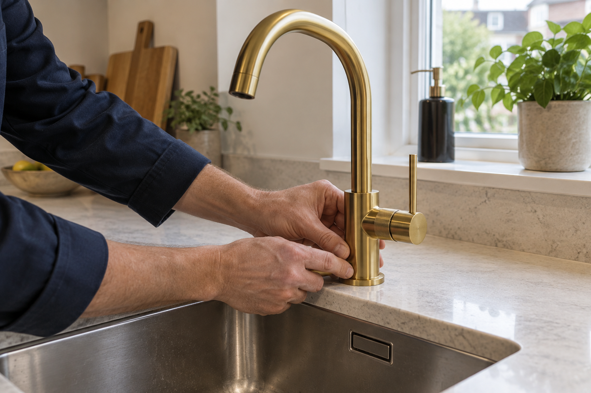
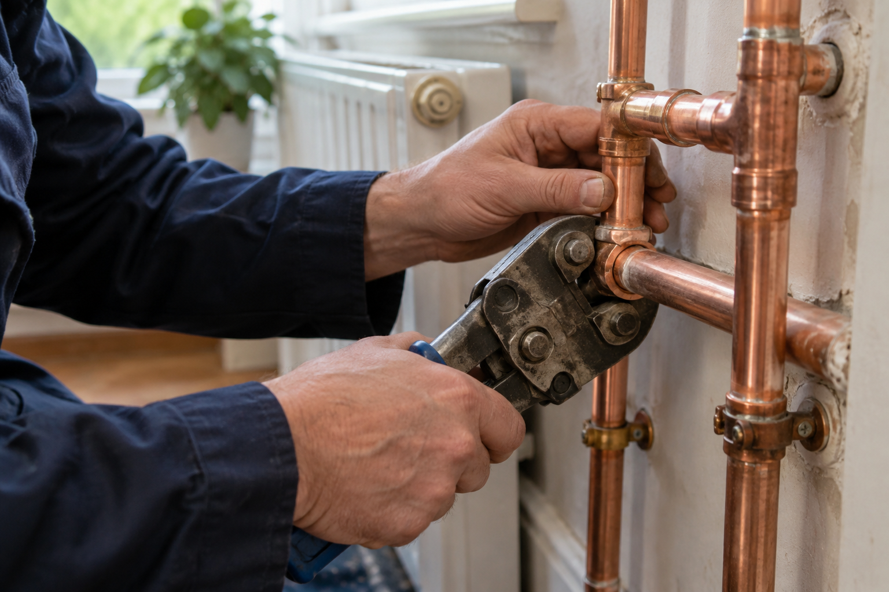
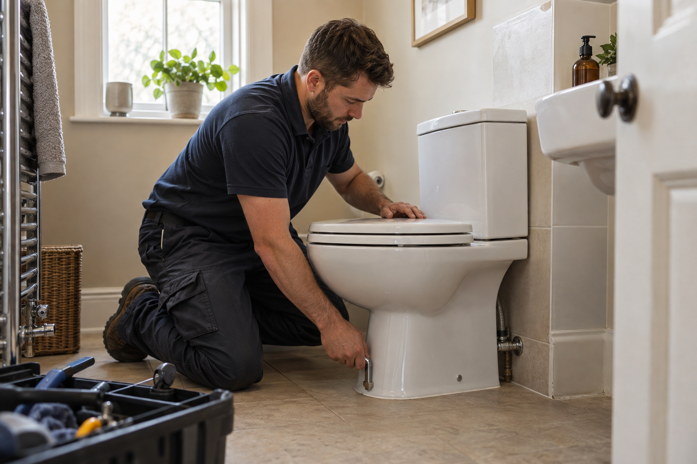

01 / PLUMBER BRO
A little detail.
A big difference.
From a new kitchen tap to a carefully fitted fixture. Make the everyday work beautifully.
Tap & fixture installation ↗LONDON & GREATER LONDON
At your service, 24/7.
From everyday repairs to those can’t-wait emergencies.
CARE YOU CAN SEE
Good plumbing makes a home feel effortless.
Skip to services ↓
01 / PLUMBER BRO
From a new kitchen tap to a carefully fitted fixture. Make the everyday work beautifully.
Tap & fixture installation ↗
02 / PLUMBER BRO
Careful pipe repairs and replacements, with a clear explanation of what your home needs.
Pipe repair & replacement ↗
03 / PLUMBER BRO
Practical bathroom repairs and installation. One less thing on your list.
Toilet repair & installation ↗